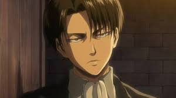
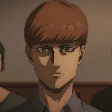

Personajes Principales |
|||
|---|---|---|---|
Eren JaegerProtagonista impulsivo y determinado. Inicialmente busca venganza contra los titanes, pero más tarde descubre su papel clave en la guerra. Posee el Titán de Ataque, el Titán Fundador y el Titán Martillo de Guerra. Más Informacion |
Mikasa AckermanAmiga de la infancia de Eren, extremadamente hábil en combate. Pertenece al clan Ackerman, lo que le otorga una fuerza sobrehumana. Su lealtad a Eren la define. Más Informacion |
Armin ArlertEstratega inteligente y pensador lógico. Hereda el Titán Colosal tras la batalla de Shiganshina. Representa la diplomacia y la esperanza en la historia. Más Informacion |

Levi AckermanCapitán de la Legión de Reconocimiento y el soldado más fuerte de la humanidad. Frío, calculador y brutal en combate. Tiene un pasado trágico y una fuerte enemistad con Zeke Jaeger. Más informacion |
Historia ReissHeredera legítima del trono de las murallas. Comienza como “Christa Lenz”, una chica amable, pero luego acepta su verdadero linaje y se convierte en reina. Más informacion |
Erwin SmithExcomandante de la Legión de Reconocimiento. Un líder visionario dispuesto a sacrificarlo todo por la verdad. Muere en la batalla de Shiganshina. Más informacion |
Hange ZoëCientífica y líder de la Legión tras la muerte de Erwin. Fascinada por los titanes, busca entender su origen Más informacion |

Grisha JaegerPadre de Eren y exmiembro de la resistencia eldiana en Marley. Fue portador del Titán de Ataque y el Titán Fundador, los cuales heredó Eren. Su pasado y decisiones marcaron el destino de la humanidad dentro y fuera de las murallas. Más informacion |
Guerreros de Marley (Traidores en la Isla Paradis) |
|||

Reiner Braun - Titán AcorazadoInicialmente el “hermano mayor” del grupo, pero sufre un colapso mental al lidiar con su doble vida como soldado y traidor. Más informacion |

Bertholdt Hoover - Titán ColosalCallado y reservado, pero su lealtad a Marley es firme. Muere en la batalla de Shiganshina. Más informacion |
Annie Leonhart – Titán HembraHábil en combate cuerpo a cuerpo. Queda cristalizada tras ser capturada en la Temporada. Más informacion |
|
Zeke Jaeger – Titán BestiaMedio hermano de Eren y líder de los guerreros de Marley. Planea erradicar a los eldianos con su "Plan de Eutanasia". Más informacion |
|
Pieck Finger – Titán CarretaIntelectual y analítica, especialista en apoyo táctico. Más informacion |
|
Secundarios Importantes |
|||
|
|
Connie SpringerAmigo leal y un poco ingenuo. Descubre que su pueblo fue convertido en titanes. Más informacion |
|
|
Gabi BraunSoldado de Marley, extremadamente hábil pero cegada por la propaganda. Mata a Sasha. Más informacion |
Falco GriceJoven soldado que admira a Reiner y busca la paz. Hereda el Titán Mandíbula. Más informacion |

Floch ForsterSoldado radicalizado que sigue ciegamente a Eren en la facción "Yeagerista". Más informacion |
Dina FritzPrimera esposa de Grisha y madre de Zeke. Se convierte en titán y mata a la madre de Eren. Más informacion |